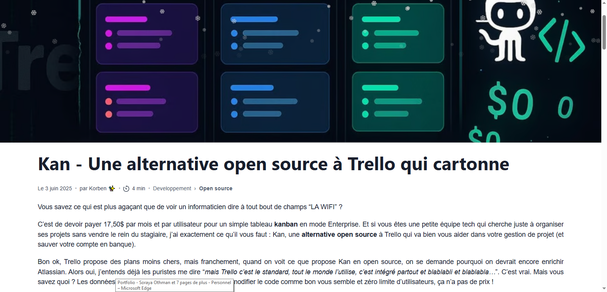

À propos
Je m'appelle Soraya Othman et je suis actuellement étudiante en BTS SIO, spécialité SLAM (Solutions Logicielles et Applications Métiers). Après avoir obtenu un bac professionnel ASSP (Accompagnement, Soins et Services à la Personne), j'ai poursuivi des études de cinéma, puis travaillé comme vendeuse dans un magasin de jouets.
J’ai toujours été curieuse et attirée par le domaine de l’informatique. Cette curiosité m’a poussée à reprendre mes études afin d’en apprendre davantage et de me former sérieusement au développement web et logiciel. Aujourd’hui, je construis mon avenir dans un secteur qui me passionne réellement.
Projets
Billetterie

Technologies : Java, FXML, JavaFX, Wamp
Ce projet est une application de billetterie en cours de développement, conçue pour permettre aux utilisateurs de consulter et gérer des spectacles. La version actuelle inclut un accueil interactif où l'utilisateur peut se connecter à son compte client ou s'inscrire s'il est nouveau. Depuis l'accueil, il est possible de rechercher un spectacle spécifique grâce à une barre de recherche dynamique, et d'afficher les détails complets de chaque spectacle sélectionné.
L'application offre également un espace personnel appelé "Mon espace", où l'utilisateur peut consulter, modifier ou supprimer les informations de son compte. Le projet est structuré selon le modèle MVC, avec des vues en FXML, des contrôleurs JavaFX pour gérer les interactions, et des modèles Java pour accéder et manipuler les données stockées dans la base MySQL via Wamp.
Cette billetterie constitue la version 1 du projet, et elle pose les bases pour intégrer des fonctionnalités supplémentaires comme l'achat de billets, la gestion avancée des spectacles et une interface plus riche et interactive.
Voir sur GitHubApplication Sonistock


Technologies : HTML, CSS, JavaScript, Node.js, XAMPP, phpMyAdmin
Application web développée durant mon stage chez Sonis pour gérer le stock de matériel informatique :
- Base de données gérée localement avec phpMyAdmin (via XAMPP).
- Connexion/déconnexion
- Recherche/filtre
- Tableau des produits avec le prix, les quantitées, l'emplacement et une case pour sélectionner
- Tableau des produits sélectionner dans le panier pour valider le choix
- Interface mobile pour les techniciens : retrait du matériel.
- Interface admin : ajout, modification, suppression de produits,
- Gestion des techniciens (ajout, édition, suppression),
- Modification de l'horaire d’envoi automatique des e-mails de stock faible,
Jeu Tetris

Technologies : HTML, CSS, JavaScript
Un jeu Tetris codé en JavaScript avec gestion des collisions, des lignes et du score. Interface simple et responsive.
Voir sur GitHubSite e-commerce "Fiestita"


Technologies : HTML, CSS
Un site vitrine de type e-commerce pour une entreprise spécialisée dans l’organisation de fêtes : anniversaires, mariages, événements professionnels, etc.
Voir sur GitHubSite Photographe - Exercice OpenClassrooms


Technologies : HTML, CSS
Projet réalisé dans le cadre d’un exercice sur la plateforme OpenClassrooms. Il s’agissait de créer le site vitrine d’un photographe professionnel, en respectant une maquette donnée.
Voir sur GitHubExpérience professionnelle
Stage - Sonis
Durée : 7 semaines
Rôle : Support technique niveau 1 et développement d'une application de stock.
Missions :
- Développement d'une application de gestion de stock avec interface mobile.
- Réalisation de l'inventaire complet et intégration dans une base de données.
- Interface techniciens pour : recherche des produits, retrait de matériel.
- Interface administrateur pour : ajout, modification, suppression de matériel. Paramétrage des horaires d’envoi automatique d’emails (stock faible). Gestion des comptes techniciens : ajout, modification, suppression.

Vendeuse - King Jouet
Durée : 4 ans
Rôle : Vendeuse dans un magasin de jouets, où j’ai conseillé les clients sur les produits, géré les stocks et contribué à la mise en valeur des articles pour améliorer l'expérience d'achat.

Vendeuse en produits informatiques et gaming - Achatmania
Événements : Paris Games Week, Toulouse Game Show, DreamHack
Rôle : Vendeuse de produits informatiques et gaming lors de salons spécialisés dans le secteur. Conseil, démonstration et vente de produits aux visiteurs, en mettant en avant leurs spécificités et avantages.

Veille technologique
Outils et tendances du développement web
Afin de rester à jour dans un domaine en constante évolution, je mène une veille technologique régulière. Celle-ci me permet de suivre les nouveautés, les outils récents et les bonnes pratiques du développement web.
Mes sources principales :
- Korben : un site francophone qui propose des articles sur les outils pour développeurs, les innovations techniques, la cybersécurité et les tendances numériques.
- Smashing Magazine : une ressource anglophone de référence dans le développement et le design web.
- Blog du Modérateur - Tech : un site dédié aux actualités tech. Je suis également inscrite à leur newsletter.
- Blog Cloudflare : un blog orienté cybersécurité, performance web et analyses liées au trafic Internet.
Dernier article consulté :

Contactez moi
LinkedIn : Cliquer ici pour voir mon profil
GitHub : Cliquer ici pour voir mon profil